Exportação de Arquivos
Exportação de arquivos é uma função onde pode-se incluir, alterar, excluir arquivos cadastrados no sistema e atualizar a lista de arquivos.
Esta seção pode ser acessada pelo menu lateral ou menu de utilidades > Ferramentas > Exportação de Arquivos.
A exportação de arquivos refere-se a enviar dados do sistema de origem para um sistema externo. Isso geralmente é feito selecionando os dados relevantes do sistema de origem e gravando-os em um arquivo com um formato específico, como CSV, XML, JSON ou qualquer outro formato adequado para o sistema externo que receberá os dados.
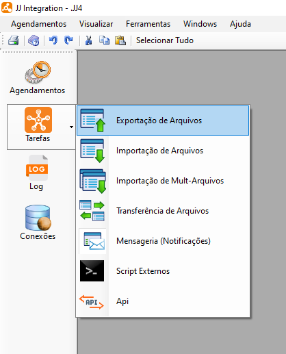
Exportação de Arquivos
- Ao selecionar a opção "Exportação de arquivos" o sistema irá exibir uma tela onde é possível incluir, alterar excluir e atualizar mapeamentos de arquivo de saída.
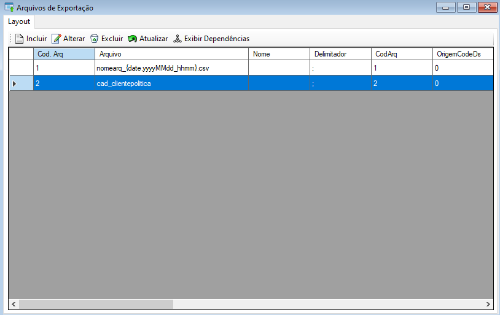
Para realizar um novo mapeamento de arquivo de saída selecione o botão Incluir .
Ao selecionar o sistema irá exibir uma nova tela para configuração do arquivo de saída separada em três partes: Conexão, Arquivo e Eventos. Após preencher todos os dados necessários selecione o botão "Ok" para finalizar e salvar o novo mapeamento.
Na aba Conexão preencha a conexão com banco de dados de origem, o tipo do objeto e o nome da View.
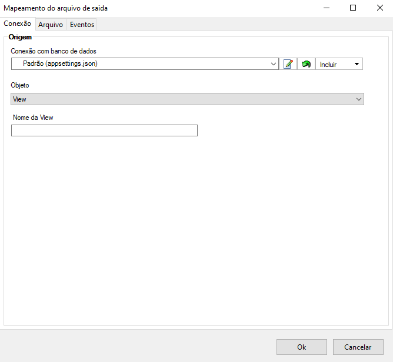Na aba Arquivo selecione a conexão de destino desejada, preencha o nome do arquivo conforme o padrão para inserir valores de data e hora
{date.ddMMyyyyhhmmss}sendo possível utilizar todos ou apenas alguns dos seguintes formatos de data/hora:dd = dia,MM = mês(M maiúsculo),yyyy = ano,hh = hora,mm = minuto(m minúsculo),ss = segundo.Exemplo: nome do arquivo de origem: arquivoteste.txt, padrão definido para nomear/renomear o arquivo: foo{date.ddMMyyy}.txt, resultado final: foo_22102018.txt
Após preencher o nome do arquivo selecione o Enconding desejado, se deseja ou não compactar o arquivo, o delimitador desejado e se deseja ou não incluir o título como a primeira linha do arquivo.
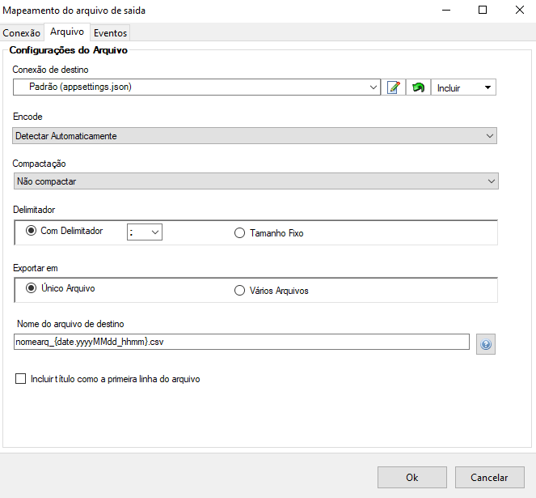Na aba Eventos selecione quando deseja executar o evento e preencha o campo de Script com o script de banco de dados necessário para execução da tarefa.
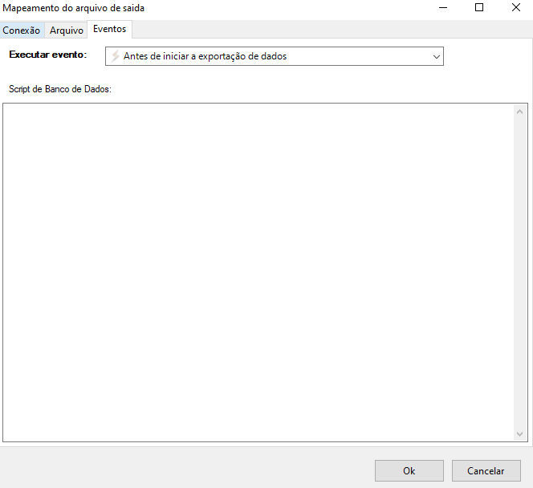Para editar um mapeamento de arquivo de saida selecione o mapeamento desejado na lista e após selecione o botão Alterar . Ao selecionar o sistema irá exibir uma nova tela para edição da configuração do arquivo de saída separada em três partes: Conexão, Arquivo e Eventos. Após alterar todos os dados necessários selecione o botão "Ok" para finalizar e salvar as alterações realizadas. Também é possível Duplicar a exportação já criada, visando simplificar o processo.
Na aba Conexão poderá ser alterada a conexão com banco de dados de origem, o tipo do objeto e o nome da View.
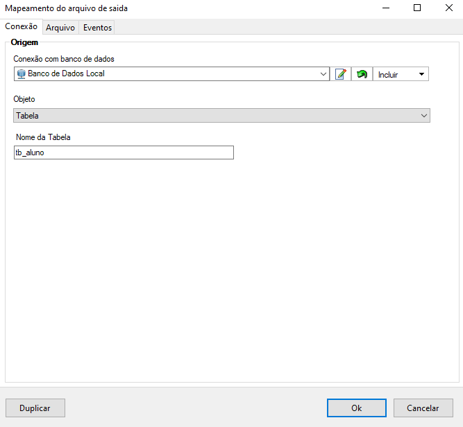Na aba Arquivo altere as informações desejadas e em caso de alteração do nome do arquivo, realize a alteração conforme o padrão para inserir valores de data e hora
{date.ddMMyyyyhhmmss}sendo possível utilizar todos ou apenas alguns dos seguintes formatos de data/hora:dd= dia,MM= mês (M maiúsculo),yyyy= ano,hh= hora,mm= minuto (m minúsculo) ess= segundo.Exemplo: nome do arquivo de origem:
arquivoteste.txt, padrão definido para nomear/renomear o arquivo:foo{date.ddMMyyy}.txt, resultado final:foo_22102018.txt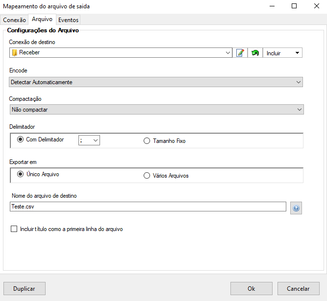Na aba Eventos altere se necessário quando deseja executar o evento e preencha o campo de Script com o script de banco de dados necessário para execução da tarefa.
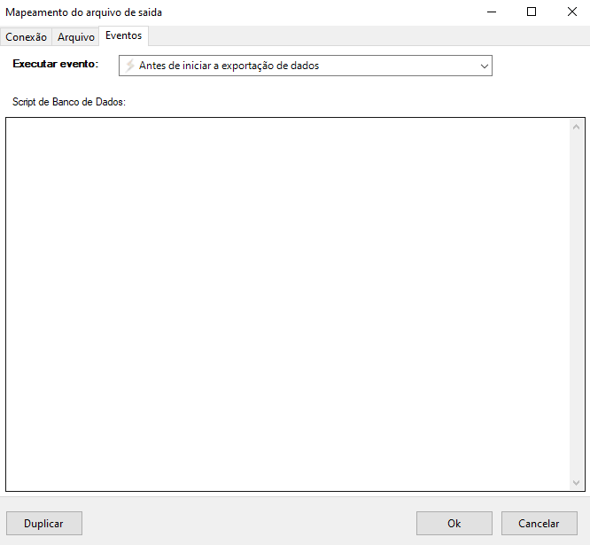
Para excluir um mapeamento selecione o mapeamento desejado e após selecione o botão Excluir 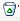, após selecionar o sistema irá exibir uma mensagem de confirmação, selecione botão "Ok" para confirmar e excluir.
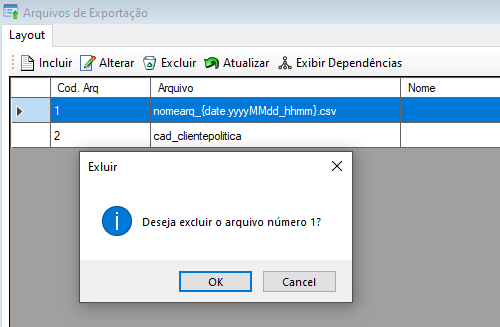
Para atualizar a lista de tarefas selecione o botão Atualizar , após selecionar o sistema irá atualizar a lista sendo possível dar continuidade nas atividades normalmente.
Para exibir dependencias da tarefa selecionada, selecione o botão Exibir Dependências , após selecionar o sistema irá exibir a lista de dependências da tarefa caso exista alguma.
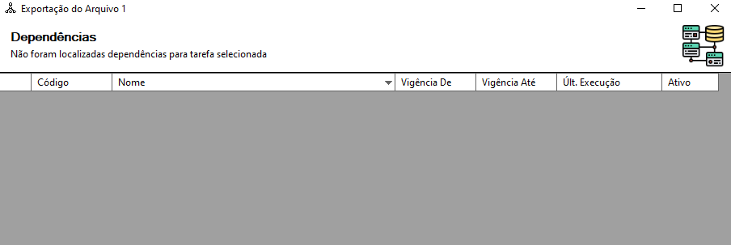